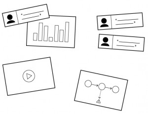
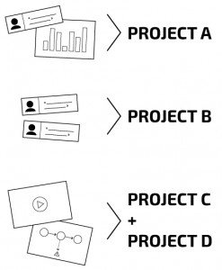
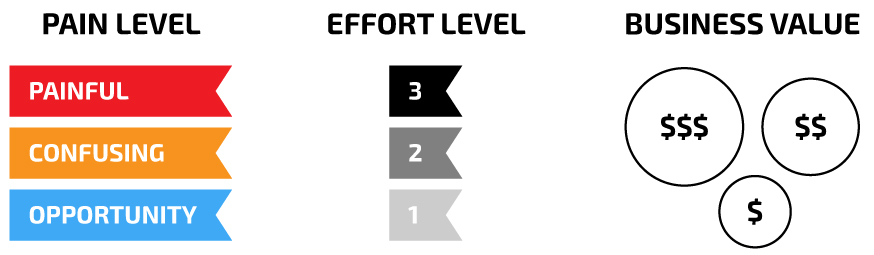
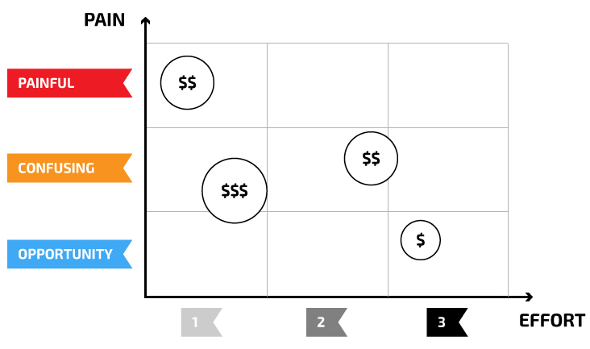
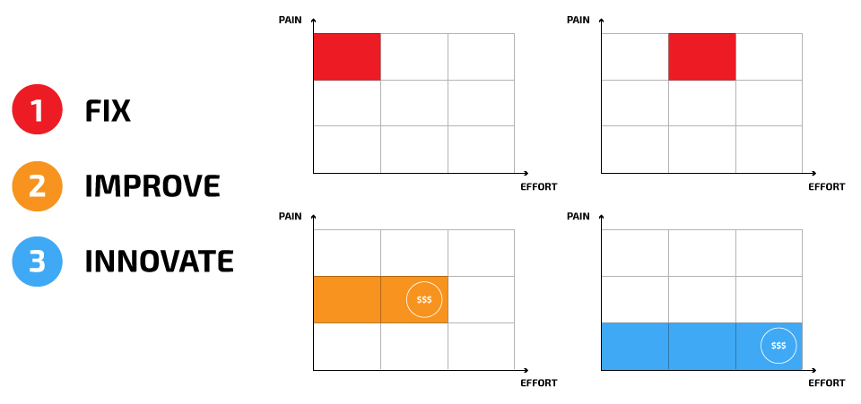
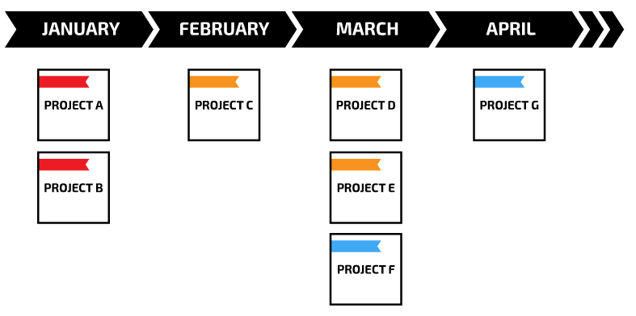

Cómo construir un roadmap de producto, basado en tu investigación del usuario
08/09/15
¿Cómo clasificar y filtrar los resultados de tu análisis de los usuarios y transformarlos en acciones? ¿Por dónde empezar?
Es difícil elegir la visión con la que vamos a iniciar un proyecto, y llegar a un acuerdo con los diferentes equipos involucrados en él. También no dejar tus sentimientos y las reacciones de los usuarios de lado, puede llevar a que tu producto sea reflejo de los problemas que quieres solucionar con él.
Este artículo te brinda la ayuda que necesitas para construir un plan de alto nivel de acuerdo a todas tus investigaciones.
Te ayudará a encontrar el punto de partida con los proyectos que aporten mayor valor a tu producto y sumar un mayor balance con las siguientes preguntas:
- ¿Es importante para el usuario?
- ¿Cuánto te va a costar?
- ¿Cuánto vas a ganar o ahorrar?
Nota:
Es importante hacer parte del proceso a los que estén dispuestos a participar: ej. El dueño del producto, el diseñador de interfaces, el experto en UX, desarrolladores, etcétera. Una vez que hayas hecho la investigación podrás continuar con el trabajo en pequeños talleres con el equipo. Puedes preparar unas tarjetas con información importante para facilitar el ejercicio.
1. Recolectar y compartir los datos de los usuarios

Lo primero que debes hacer es identificar los datos relevantes e importantes de tu investigación. Manten en mente los que tengan patrón con tus usuarios de prueba. Si es necesario cuantifica los resultados para que el resto de tu equipo pueda generar casos de estudio.
En este punto es importante que presentes los resultados de la mejor manera posible. Usa cualquier evidencia que tenga el usuario (video, fotos, testimonios, etc.)
2. Agrupa los datos para crear plantillas de tus proyectos.

Si tienes varias fuentes de datos puedes agruparlas en plantillas y empezar a identificar proyectos potenciales.
No necesitas identificar todos los detalles por ahora.
Tomemos un par de datos (ficticios) como ejemplo:
- Google Analytucs: Un promedio de 4 visitas antes de terminar el pedido.
- Comentario del usuario: « Siempre hago una busqueda por mi cuenta y luego le comento a mi esposa, así ella puede mirar opiniones. Al final, ella toma la decisión y termina el proceso. »
- Call Center: Un promedio de 2 llamadas antes de terminar el pedido. primera llamada: recolectar información. Segunda llamada: la decisión está tomada y se procede a hacer el pago.
Esto te puede generar 3 proyectos diferentes: Guardar las búsquedas para después / compartir mi búsqueda / lista de favoritos
3. Haz una buena clasificación de los datos
Para ayudarte a identificar los proyectos más valiosos, necesitas encontrar el balance entre lo que los usuarios quieren, lo que te va a costar construirlo y el resultado del proyecto.

Debes clasificarlos en los siguientes 3 puntos:
- Nivel de dolor: doloroso - confuso - nueva oportunidad
- Esfuerzo: 1. Proyecto pequeño, 2. Proyecto mediano, 3. Proyecto grande
- Valor de negocio potencial: $, $$, $$$
Tienes que definir lo que significa cada uno para tu empresa. Ej. ¿Qué consideran un "proyecto mediano"? ¿Qu tiene valor para tu negocio (crecimiento, conversiones, ahorrar dinero, etc.)?
No tiene porque ser tan preciso, es una ayuda. Probablemente esté mal, pero hay que empezar por algún lado.
Pero sí es importante que hagas esta clasificación con ayuda de otras personas. Intenta incluir otros equipos: desarrollo, diseño, el encargado de producto, etc. Según cómo clasifiques los datos puede reflejar el impacto que puede tener para tu empesa. Puede ser un proyecto pequeño para el equipo de desarrollo pero un esfuerzo enorme para diseño o trabajo de marketing.
4. Crea una tabla

El generar una tabla puede ayudar con los proyecto para calificarlos visualmente
- Eje X: Nivel de esfuerzo
- Eje Y: Nivel de dolor
Luego de agregar todos los proyectos, puedes poner diferentes círculos con varios tamaños donde expreses el valor que tienen.
5. Selecciona y ordena los proyectos
Piensa en tu proyecto. Por lo general, los usuarios usan solo unas cuantas caracaterísticas de todo el producto. El punto aquí no es agregar nuevos elementos si no los van a usar.
Mi consejo es seleccionar los proyectos en este orden:
- Arreglar
- Mejorar
- Innovar

Empieza con lo más dificil, doloroso y fácil de arreglar. Luego continua con lo que tu puedas mejorar, pero haz una elección sobre los proyectos que tengan mayor valor. Y repite el mismo proceso para las nuevas oportunidades.
Esa es la teoría. También debes considerar la estrategia de tu empresa y la visión del producto. ¿Qué quieres lograr? ¿Qué quieres construir? A veces, es importante elegir un proyecto porque puede ayudarte a construir una visión sobre él, incluso si parece no ser el más valioso por ahora.
En este punto del proceso, también debes decidir cuáles proyectos abandonar. Sí, pueden surgir datos sobre un tema, pero si ves que llega a costar demasiado para tu empresa o no hay ningún mercado allí, dejalo ir, ahora mismo.
6. Agrégalos a un plan

Primero, define el 'significado' de tu calendario. ¿Es por fechas de entrega? o ¿Por entregas de tu equipo de desarrollo? o ¿Comienzo de proyecto? Luego evalua ¿Cuántos 'puntos de esfuerzo' le darás al proyecto por mes como empresa? (incluyendo diseño, desarrollo, etc.) Y por último agregalos a tu calendario.
Conclusiones
Esta estructura es realmente útil cuando hiciste una investigación de tus usuarios muy grande, sin embargo, puedes ir añadiento este flujo a tu plan actual y evaluar la prioridad de los proyectos existentes sobre lo nuevo que vas descubriendo.
En la vida real, tendrás que considerar en tu plan todos los otros proyectos que no precisamente provienen del análisis de los usuarios: SEO, marketing, las ideas locas del CEO, etc. Los puedes agregar y evaluar de la misma manera.
Este enfoque te dará mayor visibilidad y te ayudará a ti y al resto de participantes a tomar decisiones juntos. No es lo más preciso y no tiene porque serlo.
Consideralo como un backlog de tu producto que podrás ir reevaluando. Si necesitas algo más preciso, puedes tomar los primeros 2 o 3 meses de tu plan y crear un análisis más detallado.
Espero haberte ayudado. ¿Alguna opinión o experiencia que quieras compartir?
Tags: Producto